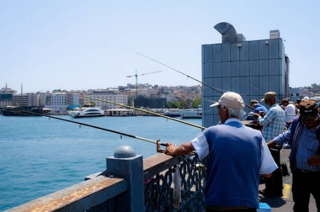
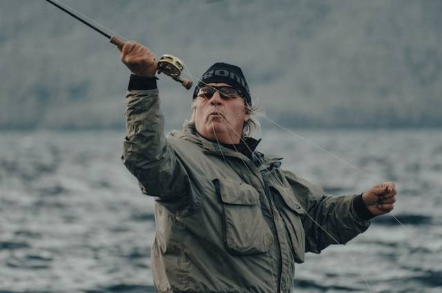

Cara Memancing di Kolam Pemancingan untuk Pemula Anti Gagal

Di penjelasan kali ini, kamu bisa mengetahui tata cara memancing di kolam pemancingan yang lebih mudah. Apalagi bagi para pemancing pemula, panduan ini merupakan langkah penting yang tidak boleh dilewatkan.
Mengingat memancing ikan di kolam pemancingan ternyata tidak semudah yang dibayangkan. Tidak mungkin kan kamu sudah membayar tiket masuk kolam pemancingan namun tidak mendapatkan tangkapan apa-apa.
Maka, kamu perlu menyimak penjelasan berikut ini untuk mengetahui cara cepat mendapatkan ikan saat memancing di kolam pemancingan.
Cara Memancing di Kolam Pemancingan

Berdasarkan buku 80 Bisnis Laris Balik Modal < 1 Tahun karya Alistiorini & Bambang Suharno, ini dia beberapa cara memancing ikan di kolam pemancingan yang tepat.
1. Pilih Reel dan Joran yang Berkualitas
Untuk bisa mendapatkan hasil yang banyak, kamu harus memilih komponen reel dan joran yang berkualitas. Pilih reel dan joran berkekuatan sedang dengan panjang sekitar 2 meter.
Ketentuan ini berlaku untuk memancing ikan yang ukurannya tidak terlalu besar. Namun, jika kamu memiliki tubuh yang tinggi, sebaiknya sesuaikan panjang joran agar tetap nyaman dikendalikan.
2. Pilih Senar Pancing Terbaik
Selanjutnya kamu perlu memilih senar pancing yang tepat sesuai dengan kebutuhan. Untuk lebih detailnya, kamu bisa bertanya langsung kepada penjual peralatan pancing ketika membeli perlengkapan.
3. Gunakan Umpan yang Sesuai
Salah satu hal yang tidak boleh kamu lewatkan adalah menggunakan umpan yang sesuai. Kamu bisa menggunakan umpan berupa jangkrik, roti, cacing, atau pelet sesuai dengan jenis ikan yang akan kamu pancing.
4. Tambahkan Pelampung Pancing
Karena kolam cenderung memiliki air yang tenang, maka ada baiknya jika kamu juga menambahkan pelampung pancing. Pelampung ini membantu mencegah agar umpan tidak langsung tenggelam ke dasar kolam.
Keberadaan pelampung juga sangat membantu sebagai indikator gigitan ikan, yang ditandai dengan pelampung yang bergerak-gerak atau tenggelam tiba-tiba.
5. Rekatkan Umpan di Kail
Jika semua peralatan sudah siap, langkah selanjutnya adalah merekatkan umpan pada kail hingga benar-benar menempel. Pastikan umpan tersebut sudah terpasang kuat dan tidak mudah lepas saat dilempar.
6. Masukkan Kail ke Kolam Pemancingan
Lanjutkan dengan melempar kail ke kolam pemancingan dan tunggu hingga umpan disambar ikan. Jika pelampung bergerak dan umpan terasa dimakan, segera hentakkan joran secara mantap dan gulung reel perlahan.
Pada dasarnya, pengelola kolam pemancingan memastikan kolamnya terisi penuh dengan ikan. Dengan menerapkan langkah-langkah di atas secara telaten, peluangmu mendapatkan strike akan jauh lebih besar.